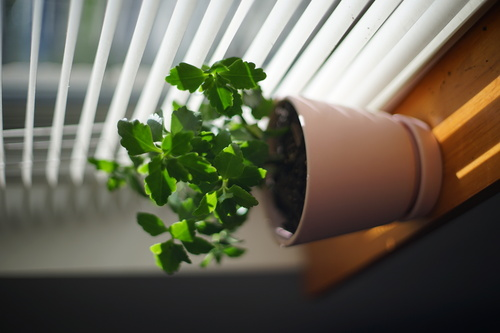
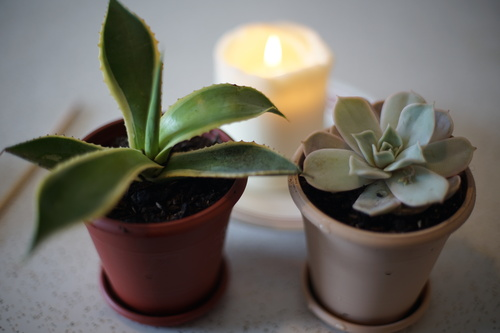

i repotted a few plants today after finding some cute light pink pots for them. i saw a girl walking around with one at walmart and i went looking for it but couldnt find it. turns out they were next to the craft section.
both my calandivas got upgrades. i saw the little plastic pots they came in and im so proud of them for growing so big! i know youre supposed to trim them but i let them get pretty wild
these guys finally get pots even if theyre plastic. the stevia was in a pot with no drainage hole and it was NG. and i found the chalk rose a couple weeks ago after looking for one for a year. theyre so pretty!!
i just wiped my sist faceplate. i think its warm enough to spray sealants now